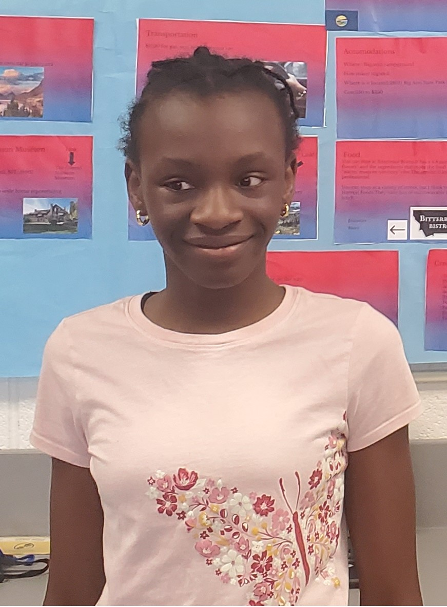

About me
Maybe your wondering about how I became a author. It started when I got a new notebook.I wanted to make good use of it, making somthing nice and me.And how did I do that?I put my imagination to the test(writing a short story).Once I was done, I was convinced that this wasn't going to be a short one. I was also convinced that I should be a author. Ever since then, I've picked up a pencil and thought up a amazing story.